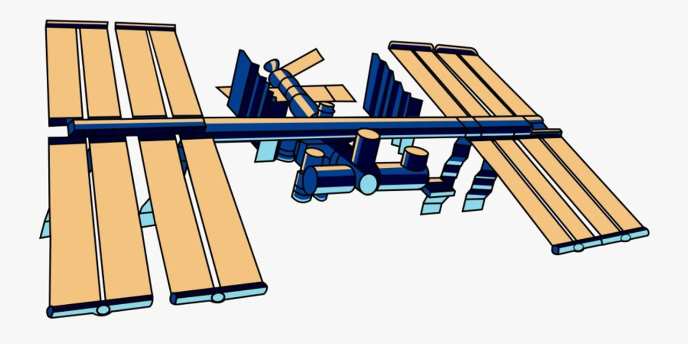
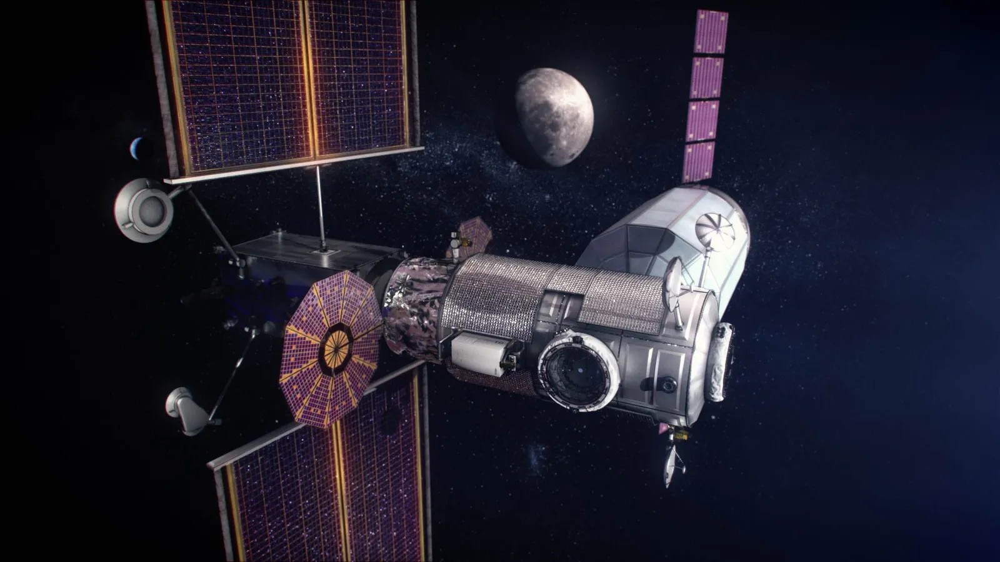
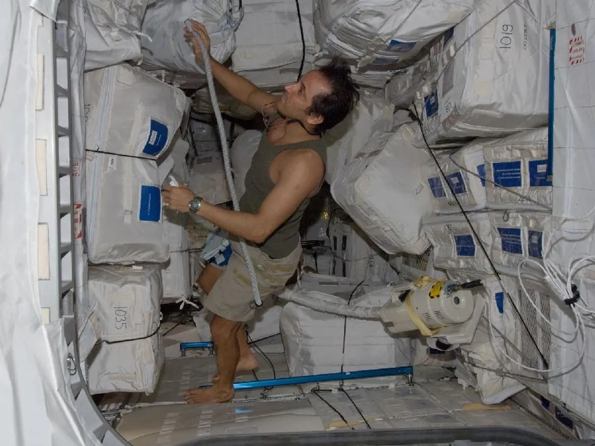
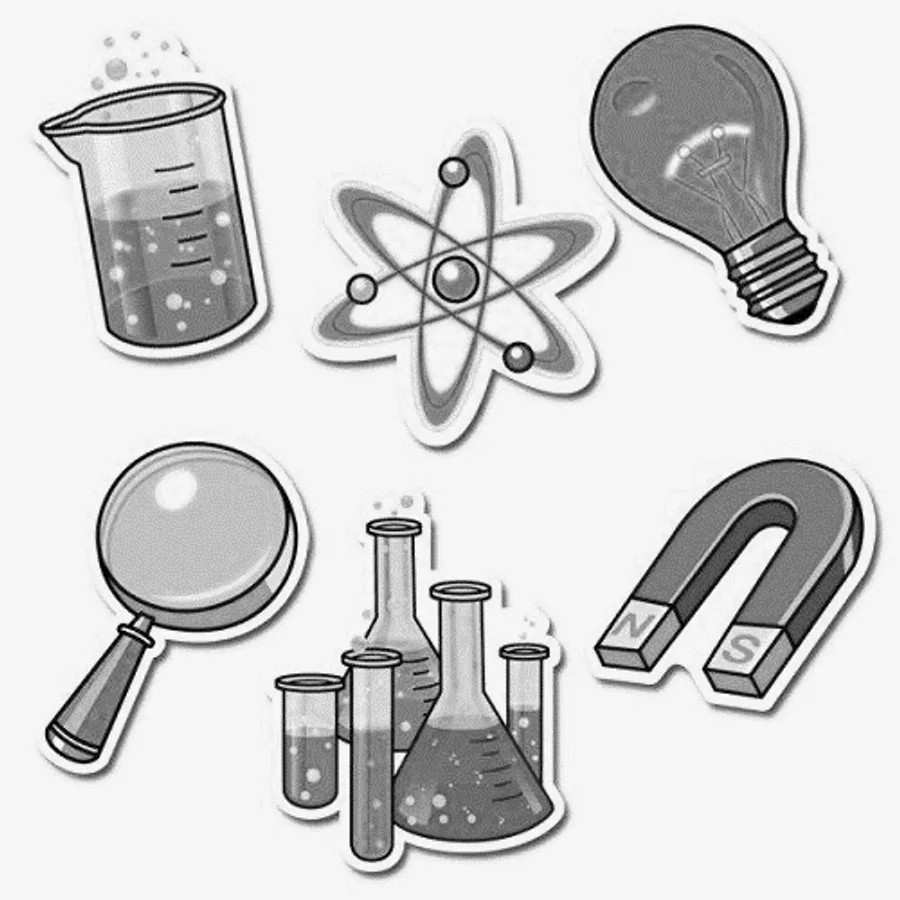

Robots are ideal for tasks that humans have to do in space

Space Station Maintenance
Space station maintenance is time consuming and risky for human astronauts. Tasks like battery replacements and leak investigation are ideally suited for robots.

Space Station Construction
With the upcoming Lunar Gateway and growing interest in private space stations, there is great need for space construction. It took 227 human spacewalks to build the ISS. Robots can play a great role in space construction.
Image source: NASA

Monitoring / Housekeeping
There are a lot of housekeeping or monitoring tasks on the ISS — like vacuuming, cleaning, and taking various readings — that are ideally suited for robots.
Image source: NASA

Scientific Experiments
Scientists worldwide are interested in conducting experiments on the ISS. Robots can play an important role by conducting those experiments remotely from Earth.